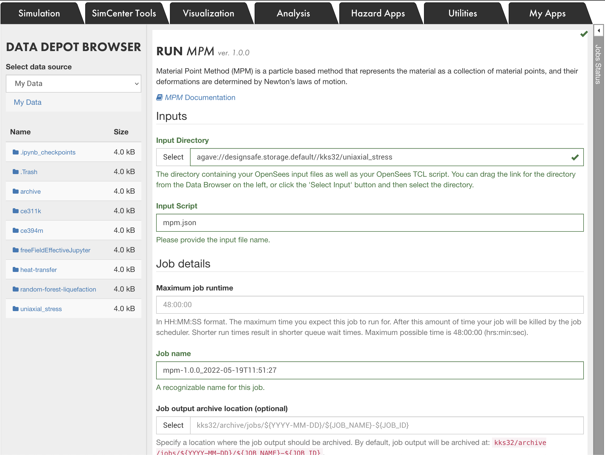
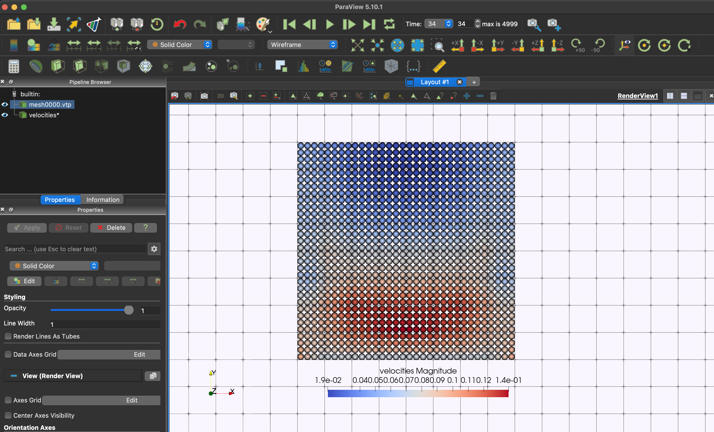

Running MPM on DesignSafe#
Notebooks#
Preprocessing: 
Run MPM and Post-process: 
CB-Geo MPM Code#
Visit GitHub for the CB-Geo MPM codebase.
Clone MPM Benchmarks#
To clone MPM benchmarks file: git clone https://github.com/cb-geo/mpm-benchmarks.git
Input generation#
Input files for the MPM code can be generated using pycbg. The documentation of the input generator is here. For more information on the input files, please refer to CB-Geo MPM documentation. The generator is available at PyPI and an be easily installed with pip install pycbg. pycbg enables a Python generation of expected .json input files, offering all Python capabilities to CB-Geo MPM users for this preprocessing stage.
Typing a few Python lines is usually enough for a user to define all necessary ingredients for a MPM simulation:
generate the mesh (using gmsh)
generate the particles
define the entity sets
create boundary conditions
set the analysis’ parameters
setup batch of simulations (the documentation doesn’t mention it yet but the function
pycbg.preprocessing.setup_batchhas a complete docstring)
An example#
Simulation of a settling column made with two different materials is described in preprocess.ipynb as follows:
import pycbg.preprocessing as utl
# The usual start of a PyCBG script:
sim = utl.Simulation(title="Two_materials_column")
# Creating the mesh:
sim.create_mesh(dimensions=(1.,1.,10.), ncells=(1,1,10))
# Creating Material Points, could have been done by filling an array manually:
sim.create_particles(npart_perdim_percell=1)
# Creating entity sets (the 2 materials), using lambda functions:
sim.init_entity_sets()
lower_particles = sim.entity_sets.create_set(lambda x,y,z: z<5, typ="particle")
upper_particles = sim.entity_sets.create_set(lambda x,y,z: z>=5, typ="particle")
# The materials properties:
sim.materials.create_MohrCoulomb3D(pset_id=lower_particles)
sim.materials.create_Newtonian3D(pset_id=upper_particles)
# Boundary conditions on nodes entity sets (blocked displacements):
walls = []
walls.append([sim.entity_sets.create_set(lambda x,y,z: x==lim, typ="node") for lim in [0, sim.mesh.l0]])
walls.append([sim.entity_sets.create_set(lambda x,y,z: y==lim, typ="node") for lim in [0, sim.mesh.l1]])
walls.append([sim.entity_sets.create_set(lambda x,y,z: z==lim, typ="node") for lim in [0, sim.mesh.l2]])
for direction, sets in enumerate(walls): _ = [sim.add_velocity_condition(direction, 0., es) for es in sets]
# Other simulation parameters (gravity, number of iterations, time step, ..):
sim.set_gravity([0,0,-9.81])
nsteps = 1.5e5
sim.set_analysis_parameters(dt=1e-3, nsteps=nsteps, output_step_interval=nsteps/100)
# Save user defined parameters to be reused at the postprocessing stage:
sim.add_custom_parameters({"lower_particles": lower_particles,
"upper_particles": upper_particles,
"walls": walls})
# Final generation of input files:
sim.write_input_file()
This creates in the working directory a folder Two_materials_column where all the necessary input files are located.
Running the MPM Code#
The CB-Geo MPM code is available on DesignSafe under WorkSpace > Tools & Applications > Simulations. Launch a new MPM Job. The input folder should have all the scripts, mesh and particle files. CB-Geo MPM can run on multi-nodes and has been tested to run on upto 15,000 cores.

Post Processing#
VTK and ParaView#
The MPM code can be set to write VTK data of particles at a specified output frequency. The input JSON configuration takes as optional vtk argument. The following attributes are valid options for VTK: "stresses, strains, and velocities. When the attribute vtk is not specified or an incorrect argument is defined, the code will write all available options.
"post_processing": {
"output_steps": 5,
"path": "results/",
"vtk" : ["stresses","velocities"],
"vtk_statevars": [
{
"phase_id": 0,
"statevars" : ["pdstrain"]
}
]
}
When opening particle data (*.vtp) in ParaView, please use the representation
Point Gaussianto visualise the particle data attribute.
The CB-Geo MPM code generates parallel *.pvtp files when the code is executed across MPI ranks. Each MPI rank will produce an attribute subdomain files, for example stresses-0_2-100.vtp and stresses-1_2-100.vtp file for stresses generated in rank 0 of 2 rank MPI processes and also a parallel pvtp file stresses-100.pvtp. The parallel *.pvtp file combines all the VTK outputs from different MPI ranks.
Use the
*.pvtpfiles for visualizing results from a distributed simulation. No need to load individual subdomain*.vtpwhen visualizing results from the MPI tasks.
The parameter vtk_statevars is an optional VTK output, which will print the value of the state variable for the particle. If the particle does not have the specified state variable, it will be set to NaN.
You can view the results in DesignSafe ParaView

HDF5#
The CB-Geo mpm code writes HDF5 data of particles at each output time step. The HDF5 data can be read using Python / Pandas. If pandas package is not installed, run pip3 install pandas. The postprocess.ipynb shows how to perform data analysis using HDF5 data.
To read a particles HDF5 data, for example particles00.h5 at step 0:
# Read HDF5 data
# !pip3 install pandas
import pandas as pd
df = pd.read_hdf('particles00.h5', 'table')
# Print column headers
print(list(df))
The particles HDF5 data has the following variables stored in the dataframe:
['id', 'coord_x', 'coord_y', 'coord_z', 'velocity_x', 'velocity_y', 'velocity_z',
'stress_xx', 'stress_yy', 'stress_zz', 'tau_xy', 'tau_yz', 'tau_xz',
'strain_xx', 'strain_yy', 'strain_zz', 'gamma_xy', 'gamma_yz', 'gamma_xz', 'epsilon_v', 'status']
Each item in the header can be used to access data in the h5 file. To print velocities (x, y, and z) of the particles:
# Print all velocities
print(df[['velocity_x', 'velocity_y','velocity_z']])
velocity_x velocity_y velocity_z
0 0.0 0.0 0.016667
1 0.0 0.0 0.016667
2 0.0 0.0 0.016667
3 0.0 0.0 0.016667
4 0.0 0.0 0.033333
5 0.0 0.0 0.033333
6 0.0 0.0 0.033333
7 0.0 0.0 0.033333